Fracture as energy balance
Griffith makes flaw size and surface energy central to brittle failure. [12]
Research map · solid mechanics · materials science
A compact guide to how solids deform, remember, damage, and fail—and how experiments, computation, and uncertainty turn those mechanisms into engineering decisions.
Open a topic for its governing question and canonical entry points. Its right-hand preview switches to a distinct representative paper; “representative” means a rigorous entry point, not necessarily the first or only paper in that area. Reference numbers lead to the selected bibliography.
The common language: kinematics, balance laws, stress, energy, and admissible constitutive response.
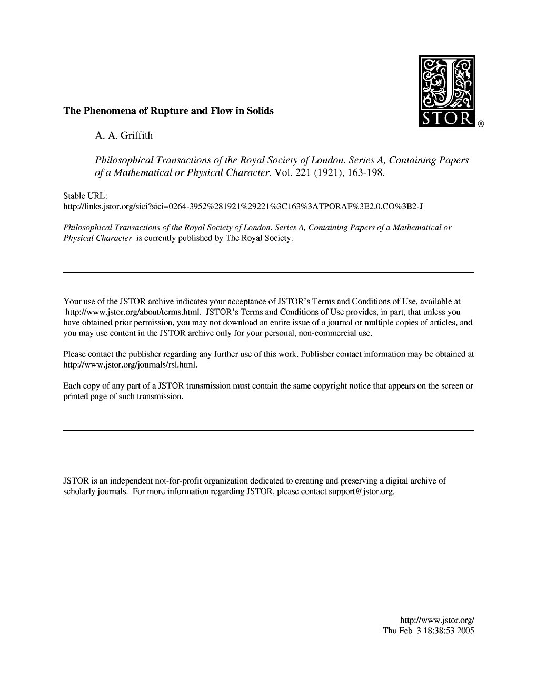
Displacement, deformation gradient, strain measures, compatibility, and objectivity distinguish geometry from material response. Small-strain theory linearizes this description; finite-strain theory retains rotations and large changes of shape. Start with [1] and [2].
Mass, linear momentum, angular momentum, and energy constrain any continuum model before a material law is chosen. The local forms become the governing PDEs after localization. See [1].
Cauchy's stress tensor maps an oriented plane to its traction. Principal stresses, invariants, hydrostatic pressure, and deviatoric stress organize multiaxial states and later define yield or failure criteria. See [1] and [3].
Reduced-dimensional theories and system-level phenomena that connect continuum laws to load-bearing components.
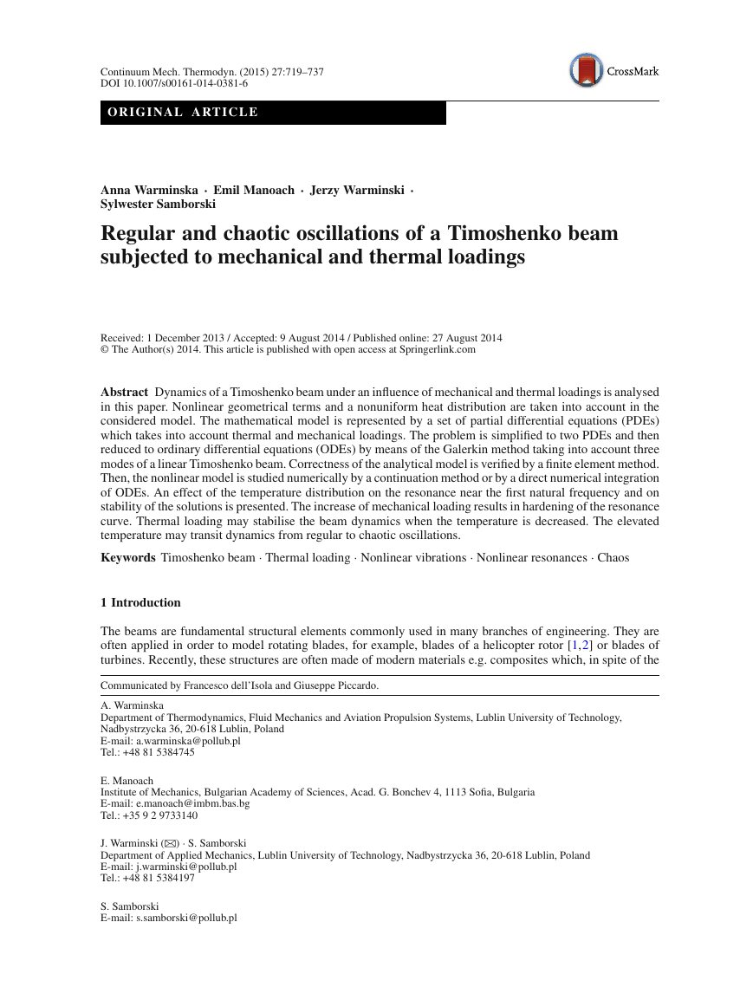
Dimensional reduction turns three-dimensional continua into tractable structural theories. Euler–Bernoulli and Timoshenko beams, Kirchhoff–Love and Reissner–Mindlin plates, and shell theories differ in retained shear, rotary inertia, and curvature assumptions. See [32] and [35].
Loss of stability may occur before material failure. Eigenvalue buckling predicts bifurcation loads only for idealized systems; imperfections, geometric nonlinearity, mode interaction, and path following govern real post-buckling response. See [33].
Mass, stiffness, damping, and forcing determine modes, resonance, transient response, and stability. Linear modal analysis is foundational, while joints, contact, damage, and large motion introduce nonlinearity.
Wave speed, dispersion, reflection, attenuation, and mode conversion connect constitutive response to ultrasonics, seismology, impact, and nondestructive evaluation. See [34].
Unilateral contact, adhesion, friction, and wear impose nonsmooth interface laws. Local surface geometry and roughness connect microscale junctions to system-level force transmission and dissipation.
Reversible constitutive behavior, material symmetry, and interactions between mechanical and other physical fields.
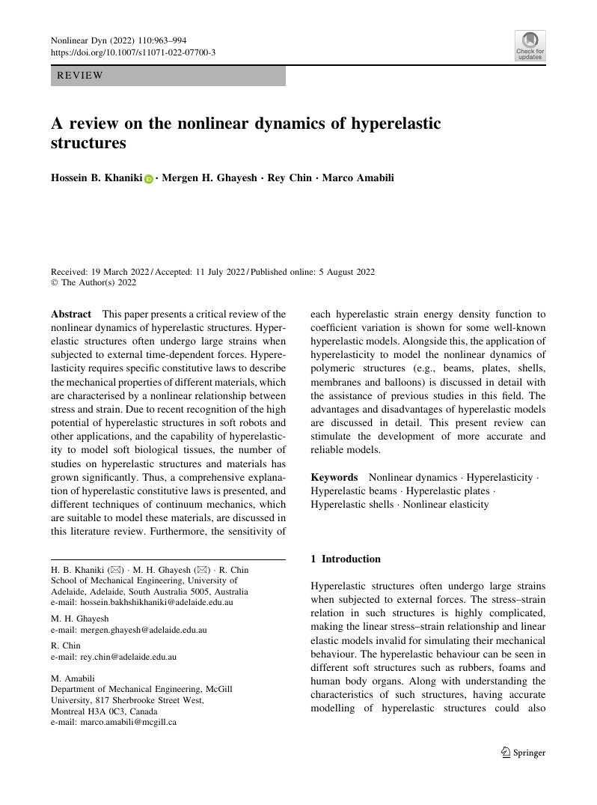
Linear elasticity relates infinitesimal strain and stress through a stiffness tensor. Hyperelasticity derives stress from a strain-energy density and is the natural setting for rubbers, soft tissues, and large elastic rotations. See [2].
Crystal class, texture, fibers, and layering restrict the symmetries of the constitutive tensor. Isotropy needs two elastic constants; general anisotropy requires substantially richer characterization. See [2].
Temperature changes free energy, thermal strain, stiffness, and phase stability. Coupled energy balance is required when deformation generates heat or thermal fields evolve on comparable time scales.
Fluid pressure and solid deformation interact in soils, rocks, gels, bone, and porous media. Biot's consolidation theory is the classical linear reference point. See [36].
Elastomers, gels, tissues, dielectric elastomers, shape-memory materials, and growth processes couple large deformation to transport, fields, chemistry, or internal actuation.
Models for irreversible response and material memory.
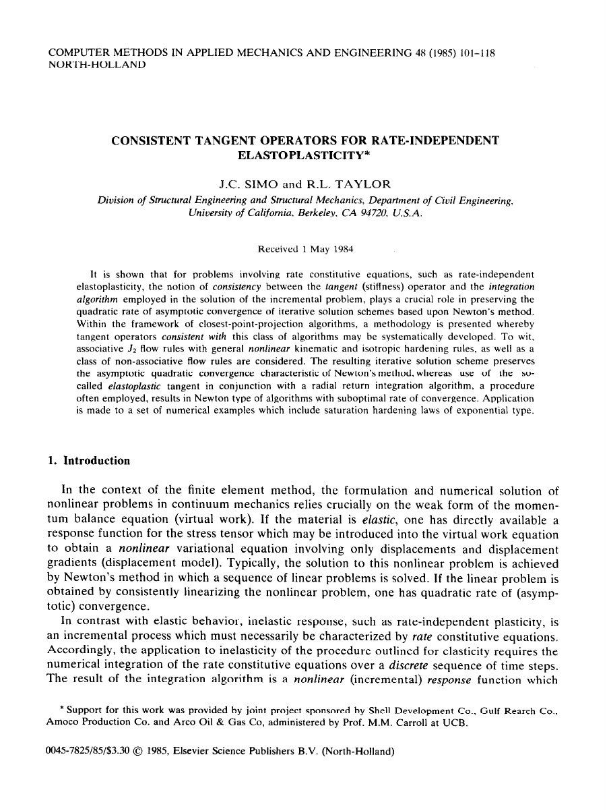
A yield surface, flow rule, and hardening law determine when permanent deformation begins, its direction, and how resistance evolves. Associative models have a variational structure; non-associative models are important in geomaterials. See [3] and [20].
Return mapping updates internal variables over a finite load increment. A consistent algorithmic tangent preserves the quadratic convergence expected from Newton's method. See [8] and [20].
Void nucleation, growth, and coalescence couple hydrostatic stress to yielding and loss of load capacity. Gurson's model is the canonical porous-plasticity starting point. See [9].
When local fields create new surfaces, grow defects, or exhaust a component under repeated loading.
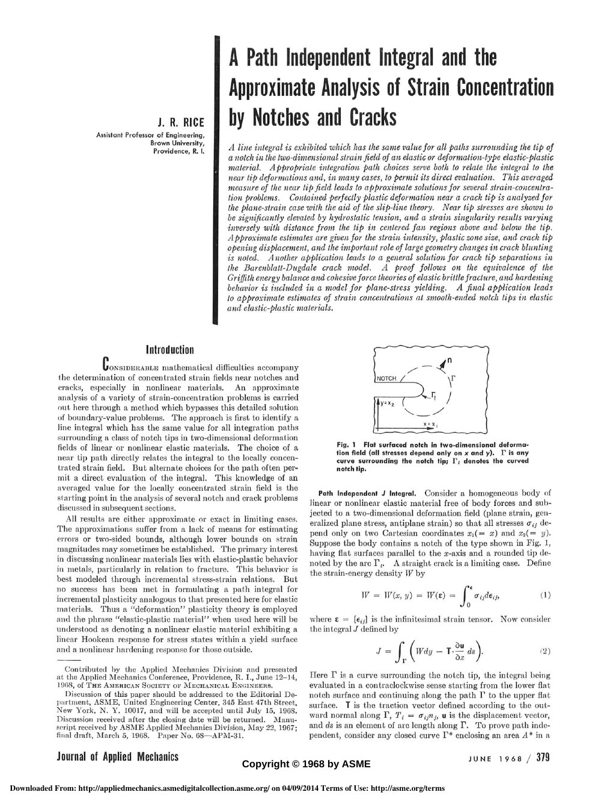
Griffith compared released elastic energy with the cost of creating crack surface. This supplies a size effect and explains why flaws lower strength. See [12].
Stress-intensity factors characterize singular crack-tip fields, while toughness supplies a material resistance under small-scale yielding. Geometry and mode mixity enter through the intensity factors. See [13].
The J-integral extends an energy-release measure to nonlinear elastic and deformation-plastic settings. Constraint, crack-tip opening, and resistance curves are needed when plastic zones are not negligible. See [15].
S–N and strain–life methods correlate total life; fracture-mechanics methods evolve an existing crack. The Paris law captures an intermediate growth regime, not threshold or final instability. See [14].
Damage variables represent distributed stiffness or strength loss before a discrete crack forms. Strain softening loses classical well-posedness, so nonlocal, gradient, or fracture-energy regularization is needed for mesh-objective predictions. See [10].
How mechanisms and architecture below the component scale produce effective response and failure.
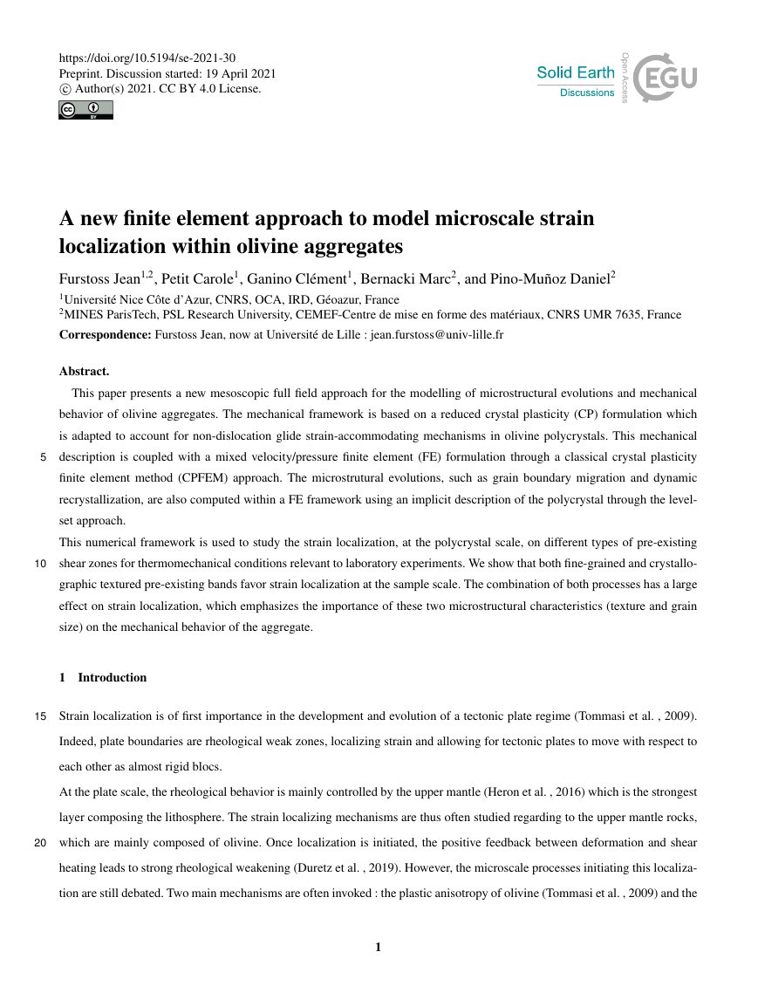
Taylor's dislocation picture connected crystallographic slip to macroscopic plastic strain. Modern crystal plasticity tracks slip systems, hardening, and lattice rotation to predict texture and anisotropy. See [4].
Eshelby's inclusion solution links eigenstrain and phase geometry to local and effective fields. Bounds, mean-field schemes, representative volume elements, and computational homogenization extend that bridge. See [5].
The Hall–Petch relation made grain size an explicit strength variable, while small-scale experiments reveal transitions to source-limited plasticity and interface-controlled mechanisms. See [6] and [7].
Fibers, particles, laminates, pores, and interfaces create direction-dependent stiffness, damage, and transport. Effective response depends on constituent behavior, morphology, contrast, and statistical representativeness.
Cell topology and instability can dominate base-material behavior, enabling unusual stiffness, Poisson response, wave control, and programmability. Manufacturing defects make uncertainty part of the mechanics.
Discretization is part of the model: it controls approximation, stability, conservation, and observable failure modes.
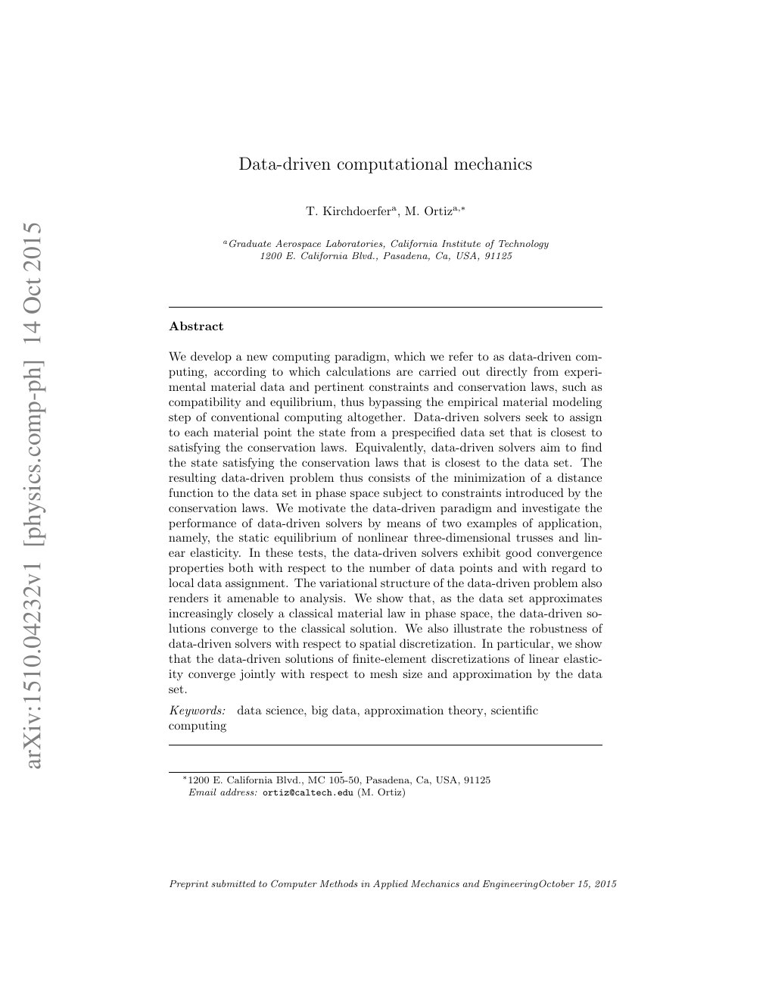
Virtual work lowers derivative requirements and produces the residual and tangent equations. Element interpolation, quadrature, constraints, and boundary conditions determine consistency and convergence. See [18] and [19].
Geometric and material nonlinearities require incremental loading, Newton iterations, line searches, and sometimes arc-length control. Consistency between local material updates and the global tangent is essential. See [8] and [20].
Near-incompressibility, bending-dominated response, distorted elements, and softening can make a superficially converged answer wrong. Mixed methods, stabilization, adaptivity, and mesh-objective regularization address distinct pathologies. See [19].
A model earns credibility by confronting measurements and declaring what is uncertain.
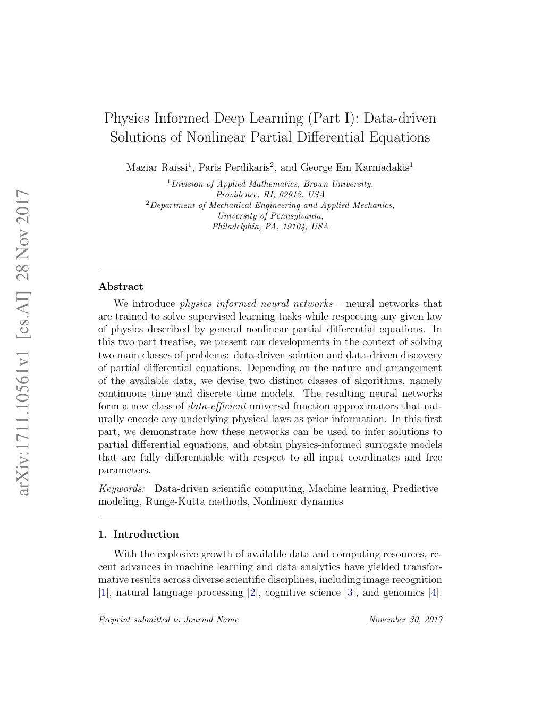
Load cells and extensometers give global response; DIC, microscopy, diffraction, and tomography expose heterogeneous fields and evolving structure. Measurement resolution must match the length and time scales in the model.
Identifiability asks whether the observations distinguish parameters at all. Regularization, experiment design, and posterior correlation matter more than a small optimizer residual. See [23].
Verification asks whether equations were solved correctly; validation asks whether the chosen equations represent reality for the intended use. Code checks, solution verification, validation metrics, and applicability domains are separate claims. See [22].
Monte Carlo, polynomial chaos, stochastic collocation, and perturbation methods propagate distributions through a model. Efficiency depends on dimension, regularity, event rarity, and solver cost. See [24].
Bayesian inference represents parameter uncertainty conditional on data and prior assumptions. A discrepancy term can prevent model error from being falsely absorbed into material parameters. See [23].
The field closes the loop from how a material is made to how safely a component performs.
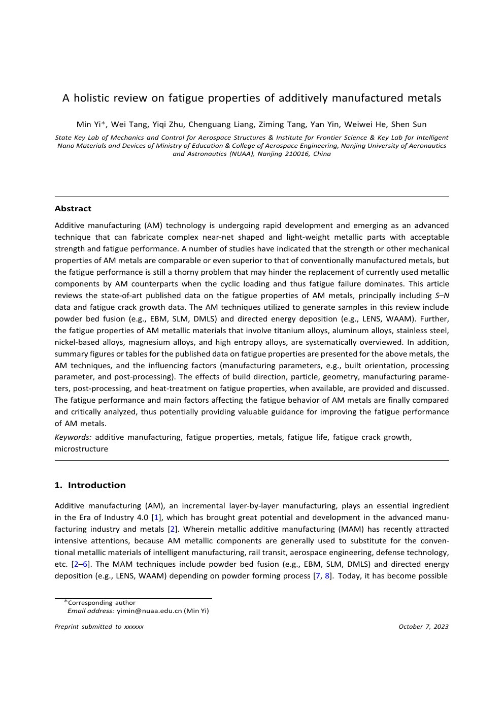
ICME treats manufacturing history, microstructure, constitutive response, component behavior, and design as a connected information flow rather than independent analyses. See [26].
Thermal cycling, melt-pool dynamics, texture, porosity, residual stress, surface roughness, and post-processing jointly control performance. Fatigue exposes this coupled history especially strongly. See [27] and [28].
Inspection, damage tolerance, remaining-life prediction, proof testing, and reliability connect mechanics models to decisions about operation, repair, retirement, and safety margins.
Performance indices screen material families; reliability and robust optimization then account for scatter, constraints, and manufacturing variation. See [29].
Topology optimization distributes material to satisfy objectives and constraints. Manufacturability, buckling, fatigue, uncertainty, and multi-material interfaces move the problem beyond minimum compliance. See [30].
This is a selective—not exhaustive—sequence of papers that changed the language or computational practice of solid mechanics. The selection follows the progression emphasized by Stanford ME 340, MATSCI 208, CME 232, and CEE 310: fracture energy, structural discretization, crack-tip fields, constitutive modeling, micromechanics, variational fracture, and data-constrained mechanics. Every preview is from the paper named beside it.
Griffith makes flaw size and surface energy central to brittle failure. [12]
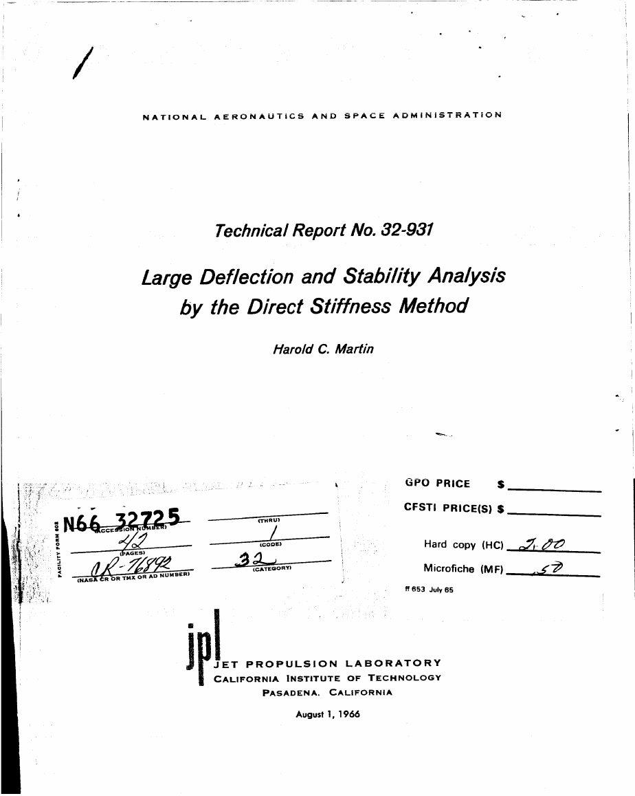
Martin develops large-deflection and stability analysis in the assembled stiffness framework that underlies structural finite-element practice.
Rice introduces the J-integral for nonlinear crack-tip fields. [15]
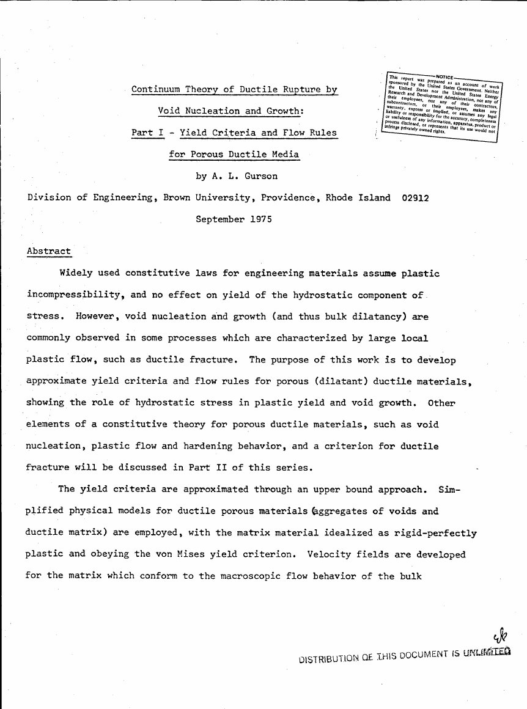
Gurson connects hydrostatic stress, porosity, yielding, and ductile rupture. [9]
Consistent tangents connect return mapping to robust nonlinear FE solves. [8]
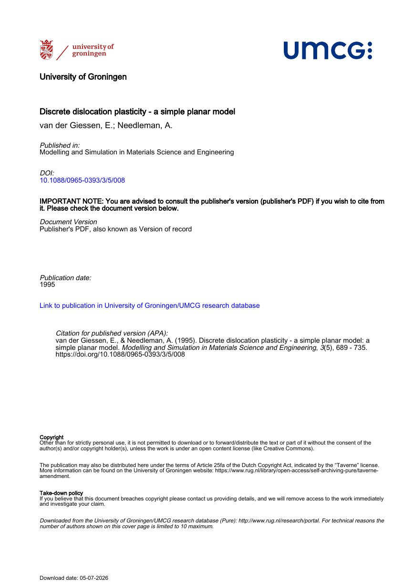
Van der Giessen and Needleman connect individual dislocation motion to continuum-scale boundary-value problems.
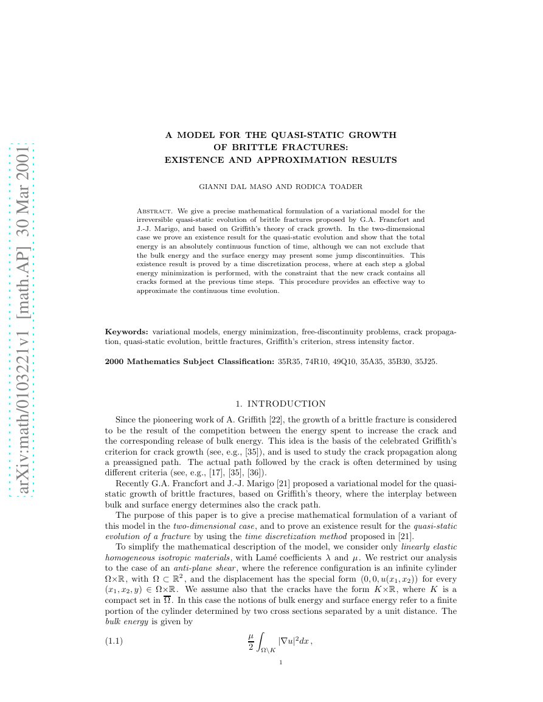
Chambolle establishes existence and approximation results for quasi-static brittle-crack growth.
Kirchdoerfer and Ortiz formulate mechanics without a fitted constitutive function. [21]
Important historical anchors not duplicated as local page images: Taylor’s dislocation theory (1934), Eshelby’s inclusion solution (1957), and the Turner–Clough–Martin–Topp stiffness paper (1956) remain canonical and are retained in the bibliography or topic map. Their absence from this image trail is a source-access constraint, not a judgment of importance.
Core mechanics: Gurtin et al. → Holzapfel → Hill
Computational solids: Hughes → Simo & Hughes → Simo & Taylor
Failure: Griffith → Irwin → Rice → Bourdin et al.
Data and credibility: Oberkampf & Roy → Kennedy & O’Hagan → Xiu & Karniadakis
The learning sequence is anchored in Stanford’s mechanics curriculum. Venue labels describe scholarly role rather than a fabricated universal ranking.
Torsion, bending, buckling, pressure vessels, multiaxial stress, and failure criteria.
Elasticity, contact, plasticity, crystal plasticity, LEFM, J-integral, cohesive models, and fatigue.
Microstructure–property relations, dislocations, strengthening, creep, fracture, and fatigue.
Variational forms, bars, beams, membranes, plates, elasticity, FEM, and BEM.
Finite deformation, finite elasticity, viscoelasticity, plasticity, and nonlinear FE implementation.
Elastic waves, dispersion, interfaces, Green functions, reciprocity, adjoints, and inversion.
LEFM, elastodynamics, cohesive weakening, friction laws, rupture nucleation, and arrest.
Core and breadth courses spanning structural dynamics, solid mechanics, fracture, plasticity, FEM, and scientific computing.
Solid mechanics is journal-led. “Leading” depends on contribution type: fundamental mechanics, computational methodology, physical metallurgy, fracture, or experiment. The list below therefore states scope rather than pretending to be a single ordinal ranking.
Mechanism-based theoretical, computational, and experimental work of lasting significance.
Foundations and applications across material behavior, stability, failure, multiscale and multiphysics solids.
Permanent-interest results across mechanics, including constitutive behavior, fracture, dynamics, waves, and computation.
Major advances in computational methods governed by mechanics.
Analysis, development, and implementation of numerical methods for engineering.
Mechanistic processing–structure–property connections in inorganic materials.
Plasticity, damage, micromechanics, and constitutive modeling.
Fracture, fatigue, damage tolerance, and structural integrity.
Mechanisms, characterization, and prediction of fatigue in materials and structures.
New experiments and measurement methods for materials, structures, and systems.
These are meetings researchers recognize as major gathering points. Unlike computer-science conferences, most do not replace journal publication; reputation comes from invited lectures, minisymposia, community concentration, and technical review.
IUTAM’s broad congress, with selected general, sectional, and contributed presentations across mechanics.
The broad US congress spanning solid, fluid, computational, experimental, and applied mechanics.
IACM’s biennial world congress for computational mechanics.
USACM’s national congress, complemented by specialist thematic conferences.
Highly concentrated symposia at the interfaces of mechanics, materials, mathematics, and engineering science.
Measurement, material characterization, dynamics, inverse methods, and V&V/UQ.
Fundamental and applied engineering mechanics organized through ASCE EMI technical committees.